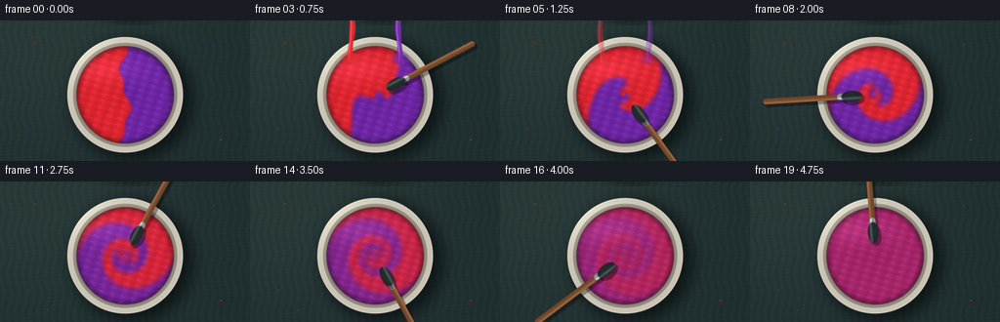
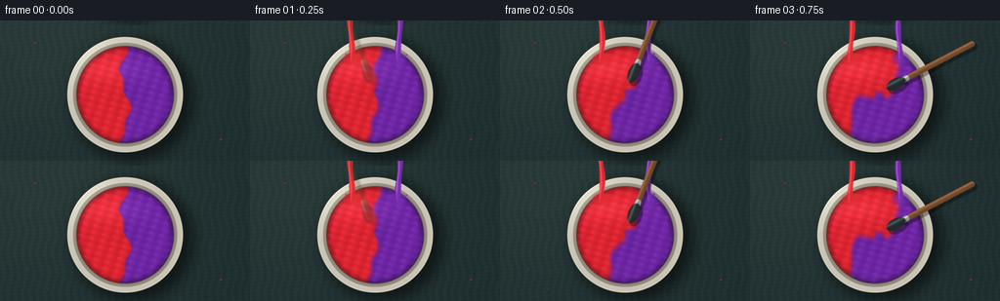

CODING AGENTS AS PIXEL WORLD MODELS
traex/DeepSeek-V4.1-Flash · material_0003
点击播放 · 原生 RGB 像素
逐轮保存的候选
回放视频、检查图与代码变化。
每份候选均可单独播放。实际图片检查记录在下方工具轨迹中。
候选 01播放与检查图
点击播放 · 原生 RGB 像素

展开代码变化
--- 上一保存版本
+++ 本次保存版本
@@ -0,0 +1,338 @@
+from pathlib import Path
+
+import numpy as np
+from PIL import Image, ImageFilter
+from scipy.ndimage import gaussian_filter, map_coordinates
+
+import artifact_io
+
+
+CASE_DIR = Path(__file__).resolve().parent
+W, H, N, FPS = 256, 144, 20, 4.0
+SS = 3
+RW, RH = W * SS, H * SS
+
+
+def smoothstep(edge0, edge1, value):
+ t = np.clip((value - edge0) / (edge1 - edge0), 0.0, 1.0)
+ return t * t * (3.0 - 2.0 * t)
+
+
+def sd_capsule(px, py, ax, ay, bx, by):
+ pax, pay = px - ax, py - ay
+ bax, bay = bx - ax, by - ay
+ denom = bax * bax + bay * bay
+ h = np.clip((pax * bax + pay * bay) / max(denom, 1e-6), 0.0, 1.0)
+ return np.hypot(pax - bax * h, pay - bay * h)
+
+
+def sd_ellipse(px, py, cx, cy, rx, ry, angle):
+ c, s = np.cos(angle), np.sin(angle)
+ dx, dy = px - cx, py - cy
+ x = c * dx + s * dy
+ y = -s * dx + c * dy
+ return np.hypot(x / rx, y / ry)
+
+
+def tint(image, color, alpha):
+ color = np.asarray(color, dtype=np.float32)
+ return image * (1.0 - alpha[..., None]) + color * alpha[..., None]
+
+
+def make_initial_concentration():
+ sw, sh = 256, 144
+ yy, xx = np.mgrid[0:sh, 0:sw].astype(np.float32)
+ # A gently irregular split gives exactly half red and half violet paint.
+ boundary = 128.0 + 4.8 * np.sin((yy - 72.0) * 0.085) + 1.8 * np.sin(yy * 0.23)
+ concentration = smoothstep(-2.0, 2.0, boundary - xx)
+ return concentration.astype(np.float32)
+
+
+def advect(field, vx, vy, dt):
+ h, w = field.shape
+ yy, xx = np.mgrid[0:h, 0:w].astype(np.float32)
+ sx = xx - vx * dt
+ sy = yy - vy * dt
+ return map_coordinates(field, [sy, sx], order=1, mode="nearest").astype(np.float32)
+
+
+def simulate_concentration():
+ concentration = make_initial_concentration()
+ h, w = concentration.shape
+ yy, xx = np.mgrid[0:h, 0:w].astype(np.float32)
+ cx, cy = 128.0, 76.0
+ frames = []
+ dt = 0.025
+ steps_per_frame = int(round(1.0 / (FPS * dt)))
+
+ for frame_index in range(N):
+ t = frame_index / FPS
+ for _ in range(steps_per_frame):
+ time_now = t + (_ + 1) * dt
+ dx = xx - cx
+ dy = yy - cy
+ radius = np.hypot(dx, dy) + 1e-4
+ stir = smoothstep(0.20, 0.75, time_now) * (1.0 - 0.68 * smoothstep(3.75, 4.65, time_now))
+
+ # A forced vortex with strong shear near the spatula and a slower outer flow.
+ tangential_speed = 94.0 * (1.0 - np.exp(-(radius / 13.0) ** 2)) * np.exp(-radius / 58.0)
+ omega = tangential_speed / radius
+ vx = -dy * omega * stir
+ vy = dx * omega * stir
+
+ # The moving blade pulls paint inward and adds a small local wake.
+ inward = 5.0 * smoothstep(8.0, 30.0, radius) * stir
+ vx -= dx / radius * inward
+ vy -= dy / radius * inward
+
+ blade_angle = -2.05 + 2.85 * max(0.0, time_now - 0.2)
+ blade_x = cx + 24.0 * np.cos(blade_angle)
+ blade_y = cy + 24.0 * np.sin(blade_angle)
+ wake = np.exp(-(((xx - blade_x) / 15.0) ** 2 + ((yy - blade_y) / 9.0) ** 2))
+ vx += -(yy - blade_y) * 0.024 * wake * stir
+ vy += (xx - blade_x) * 0.024 * wake * stir
+
+ concentration = advect(concentration, vx, vy, dt)
+ concentration = gaussian_filter(concentration, 0.22, mode="nearest")
+
+ # Vigorous stirring eventually homogenizes the two equal portions.
+ blend = 0.010 * smoothstep(2.0, 3.15, time_now) + 0.095 * smoothstep(3.55, 4.65, time_now)
+ concentration += (0.5 - concentration) * blend
+ concentration = np.clip(concentration, 0.0, 1.0)
+
+ frames.append(concentration.copy())
+ return frames
+
+
+def make_background():
+ yy, xx = np.mgrid[0:RH, 0:RW].astype(np.float32)
+ x, y = xx / SS, yy / SS
+
+ base = np.zeros((RH, RW, 3), dtype=np.float32)
+ base[:] = (31.0, 46.0, 47.0)
+ broad_light = np.exp(-(((x - 46.0) / 155.0) ** 2 + ((y - 20.0) / 125.0) ** 2))
+ base += broad_light[..., None] * np.array([10.0, 12.0, 10.0], dtype=np.float32)
+
+ grain = (
+ np.sin(x * 0.82 + np.sin(y * 0.15) * 1.7)
+ + 0.55 * np.sin(y * 1.65 + x * 0.12)
+ + 0.24 * np.sin(x * 3.7 - y * 0.8)
+ )
+ grain = gaussian_filter(grain, 0.8) / 1.8
+ base += grain[..., None] * np.array([3.4, 4.1, 3.6], dtype=np.float32)
+
+ cx, cy = 128.0, 76.0
+ dx, dy = x - cx, y - cy
+ outer = np.hypot(dx, dy)
+
+ # A soft, directional cast shadow keeps the bowl grounded without a heavy vignette.
+ shadow_mask = (outer < 63.0).astype(np.float32)
+ shadow = np.asarray(
+ Image.fromarray((shadow_mask * 255).astype(np.uint8)).filter(ImageFilter.GaussianBlur(7.0 * SS)),
+ dtype=np.float32,
+ ) / 255.0
+ shadow = np.roll(shadow, (5 * SS, 7 * SS), axis=(0, 1))
+ base *= 1.0 - 0.53 * shadow[..., None]
+
+ # Very small surrounding paint flecks add scale and a tactile workbench feel.
+ flecks = [
+ (36, 23, 2.0, 0.8, (178, 35, 44)),
+ (219, 25, 1.3, 0.6, (102, 49, 148)),
+ (29, 111, 1.4, 0.7, (95, 42, 139)),
+ (226, 122, 1.7, 0.8, (185, 39, 42)),
+ (49, 132, 1.0, 0.5, (154, 44, 94)),
+ ]
+ for fx, fy, rx, ry, color in flecks:
+ d = np.hypot((x - fx) / rx, (y - fy) / ry)
+ alpha = smoothstep(1.05, 0.58, d) * 0.72
+ base = tint(base, color, alpha)
+
+ return base
+
+
+def render_frame(concentration, background, frame_index):
+ yy, xx = np.mgrid[0:RH, 0:RW].astype(np.float32)
+ x, y = xx / SS, yy / SS
+ cx, cy = 128.0, 76.0
+ dx, dy = x - cx, y - cy
+ radius = np.hypot(dx, dy)
+ image = background.copy()
+ t = frame_index / FPS
+
+ # Ceramic bowl body and rim.
+ bowl_alpha = smoothstep(59.8, 58.7, radius)
+ rim_shade = 0.89 + 0.13 * np.exp(-(((x - 97.0) / 36.0) ** 2 + ((y - 42.0) / 30.0) ** 2))
+ ceramic = np.empty((RH, RW, 3), dtype=np.float32)
+ ceramic[:] = np.array([226.0, 220.0, 204.0], dtype=np.float32)
+ ceramic *= rim_shade[..., None]
+ rim_bevel = smoothstep(57.7, 58.8, radius) * smoothstep(60.2, 58.8, radius)
+ ceramic += rim_bevel[..., None] * np.array([16.0, 15.0, 12.0], dtype=np.float32)
+ image = image * (1.0 - bowl_alpha[..., None]) + ceramic * bowl_alpha[..., None]
+
+ # Inner ceramic wall, in shadow beneath the rim.
+ wall_alpha = smoothstep(54.0, 52.8, radius)
+ wall = np.empty((RH, RW, 3), dtype=np.float32)
+ wall[:] = np.array([184.0, 177.0, 159.0], dtype=np.float32)
+ wall *= (0.78 + 0.16 * np.exp(-(((x - 105.0) / 38.0) ** 2 + ((y - 48.0) / 30.0) ** 2)))[..., None]
+ image = image * (1.0 - wall_alpha[..., None]) + wall * wall_alpha[..., None]
+
+ # Paint surface. The field is bilinearly sampled from the 256x144 simulation.
+ paint_alpha = smoothstep(50.4, 49.1, radius)
+ sy = np.clip(y, 0.0, H - 1.001)
+ sx = np.clip(x, 0.0, W - 1.001)
+ c = map_coordinates(concentration, [sy, sx], order=1, mode="nearest")
+ c = np.clip(c, 0.0, 1.0)
+
+ red = np.array([211.0, 34.0, 43.0], dtype=np.float32)
+ violet = np.array([102.0, 35.0, 157.0], dtype=np.float32)
+ paint = c[..., None] * red + (1.0 - c[..., None]) * violet
+
+ # Fine pigment texture and low-amplitude impasto, moving only subtly with the mixture.
+ phase = 0.7 * t
+ tex = (
+ np.sin(x * 0.53 + y * 0.17 + phase)
+ + 0.58 * np.sin(y * 0.91 - x * 0.23 - 1.3 * phase)
+ + 0.28 * np.sin((x + y) * 2.2 + 0.4)
+ )
+ fine = np.sin(x * 2.7 - y * 2.1 + phase * 3.0) * np.sin(x * 0.9 + y * 2.3)
+ paint += tex[..., None] * np.array([3.6, 2.4, 3.2], dtype=np.float32)
+ paint += fine[..., None] * np.array([2.3, 1.4, 2.0], dtype=np.float32)
+
+ # Rounded meniscus and contact darkening near the bowl wall.
+ meniscus = smoothstep(43.0, 49.4, radius)
+ paint *= (1.0 - 0.29 * meniscus)[..., None]
+ inner_glow = np.exp(-((radius - 31.0) / 22.0) ** 2)
+ paint += inner_glow[..., None] * np.array([6.0, 1.8, 4.0], dtype=np.float32)
+
+ # Soft reflection band and crisp highlights read as wet, viscous paint.
+ reflection = np.exp(-(((x - 105.0) / 40.0) ** 2 + ((y - 49.0) / 14.0) ** 2))
+ reflection *= smoothstep(2.0, 9.0, radius)
+ paint += reflection[..., None] * np.array([21.0, 14.0, 18.0], dtype=np.float32)
+
+ height = 0.50 * tex + 0.28 * fine + 0.7 * c
+ gy, gx = np.gradient(gaussian_filter(height, 0.75))
+ nx, ny = -gx * 1.7, -gy * 1.7
+ nz = np.ones_like(nx)
+ norm = np.sqrt(nx * nx + ny * ny + nz * nz)
+ nx, ny, nz = nx / norm, ny / norm, nz / norm
+ light = np.array([-0.45, -0.62, 0.64], dtype=np.float32)
+ light /= np.linalg.norm(light)
+ diffuse = np.clip(nx * light[0] + ny * light[1] + nz * light[2], 0.0, 1.0)
+ paint *= (0.88 + 0.20 * diffuse)[..., None]
+ half_x, half_y, half_z = -0.32, -0.45, 0.83
+ spec = np.clip(nx * half_x + ny * half_y + nz * half_z, 0.0, 1.0) ** 28
+ paint += spec[..., None] * np.array([56.0, 44.0, 51.0], dtype=np.float32)
+
+ image = image * (1.0 - paint_alpha[..., None]) + paint * paint_alpha[..., None]
+
+ # Dark paint edge just inside the ceramic.
+ edge = smoothstep(48.8, 49.7, radius) * smoothstep(51.1, 49.9, radius)
+ image *= 1.0 - 0.24 * edge[..., None]
+
+ # Two matching pour ribbons during the opening beat.
+ pour_env = smoothstep(0.05, 0.20, t) * smoothstep(1.52, 0.94, t)
+ if pour_env > 0.001:
+ for stream_x, stream_color, bend in (
+ (103.5, (222.0, 43.0, 48.0), -1.2),
+ (152.5, (116.0, 46.0, 174.0), 1.2),
+ ):
+ center = stream_x + bend * np.sin((y + t * 55.0) * 0.10)
+ width = 2.35 + 0.42 * np.sin(y * 0.21 + t * 8.0)
+ stream = smoothstep(width + 1.1, width - 0.4, np.abs(x - center))
+ stream *= smoothstep(45.0, 37.0, y) * smoothstep(-3.0, 1.0, y)
+ stream *= pour_env
+ gloss = np.exp(-((x - (center - 1.1)) / 0.72) ** 2)
+ gloss *= stream
+ image = tint(image, stream_color, stream * 0.95)
+ image += gloss[..., None] * np.array([70.0, 34.0, 52.0], dtype=np.float32)
+
+ # A small wet impact pool and droplets make the pour feel forceful.
+ impact_x = stream_x + bend * np.sin((38.0 + t * 55.0) * 0.10)
+ impact = smoothstep(7.8, 4.3, np.hypot((x - impact_x) / 1.4, y - 39.0))
+ image = tint(image, stream_color, impact * pour_env * 0.52)
+ for dot_index in range(3):
+ angle = 0.8 + dot_index * 1.75 + t * 5.5
+ px = impact_x + np.cos(angle) * (7.0 + 1.8 * dot_index)
+ py = 39.0 + np.sin(angle) * (5.0 + 0.8 * dot_index)
+ drop = smoothstep(1.4, 0.4, np.hypot(x - px, y - py))
+ image = tint(image, stream_color, drop * pour_env * 0.8)
+
+ # Rotating silicone spatula, with a cast shadow on the paint and a wood handle.
+ stir_strength = smoothstep(0.12, 0.55, t)
+ if stir_strength > 0.01:
+ angle = -2.05 + 2.85 * max(0.0, t - 0.2)
+ head_x = cx + 24.0 * np.cos(angle)
+ head_y = cy + 24.0 * np.sin(angle)
+ out_x, out_y = np.cos(angle), np.sin(angle)
+ tan_x, tan_y = -out_y, out_x
+ end_x = cx + 112.0 * out_x
+ end_y = cy + 112.0 * out_y
+ neck_x = cx + 34.0 * out_x
+ neck_y = cy + 34.0 * out_y
+
+ handle_d = sd_capsule(x, y, neck_x, neck_y, end_x, end_y)
+ handle = smoothstep(3.5, 2.4, handle_d) * stir_strength
+ handle_shadow = sd_capsule(x - 2.3, y - 2.7, neck_x, neck_y, end_x, end_y)
+ shadow_alpha = smoothstep(4.5, 2.5, handle_shadow) * stir_strength * 0.34
+ image *= 1.0 - shadow_alpha[..., None]
+
+ # Wooden handle: warm ochre-brown with a narrow lit edge.
+ handle_col = np.empty((RH, RW, 3), dtype=np.float32)
+ handle_col[:] = np.array([111.0, 71.0, 43.0], dtype=np.float32)
+ side = ((x - neck_x) * tan_x + (y - neck_y) * tan_y) / 3.5
+ handle_col += (0.5 - np.clip(side, -1.0, 1.0))[..., None] * np.array([18.0, 12.0, 7.0], dtype=np.float32)
+ handle_col += np.exp(-((side + 0.45) / 0.26) ** 2)[..., None] * np.array([31.0, 21.0, 13.0], dtype=np.float32)
+ image = image * (1.0 - handle[..., None]) + handle_col * handle[..., None]
+
+ # Steel ferrule.
+ ferrule_d = sd_capsule(x, y, cx + 28.0 * out_x, cy + 28.0 * out_y, cx + 36.0 * out_x, cy + 36.0 * out_y)
+ ferrule = smoothstep(3.7, 2.6, ferrule_d) * stir_strength
+ steel = np.empty((RH, RW, 3), dtype=np.float32)
+ steel[:] = np.array([143.0, 151.0, 148.0], dtype=np.float32)
+ steel += np.exp(-((side + 0.42) / 0.23) ** 2)[..., None] * np.array([75.0, 78.0, 72.0], dtype=np.float32)
+ image = image * (1.0 - ferrule[..., None]) + steel * ferrule[..., None]
+
+ # The black silicone blade is broad in the direction of travel.
+ blade_shape = sd_ellipse(x, y, head_x, head_y, 11.5, 6.1, angle)
+ blade = smoothstep(1.02, 0.84, blade_shape) * stir_strength
+ blade_shadow_shape = sd_ellipse(x - 2.3, y - 3.0, head_x, head_y, 12.0, 6.7, angle)
+ blade_shadow = smoothstep(1.05, 0.82, blade_shadow_shape) * stir_strength * 0.38
+ image *= 1.0 - blade_shadow[..., None]
+
+ blade_col = np.empty((RH, RW, 3), dtype=np.float32)
+ blade_col[:] = np.array([35.0, 42.0, 43.0], dtype=np.float32)
+ bx = (x - head_x) * np.cos(angle) + (y - head_y) * np.sin(angle)
+ by = -(x - head_x) * np.sin(angle) + (y - head_y) * np.cos(angle)
+ blade_col += np.exp(-((by + 2.1) / 1.4) ** 2)[..., None] * np.array([35.0, 45.0, 44.0], dtype=np.float32)
+ blade_col *= (0.88 + 0.16 * np.exp(-(bx / 9.0) ** 2))[..., None]
+ image = image * (1.0 - blade[..., None]) + blade_col * blade[..., None]
+
+ # Gentle ceramic highlight and fine film grain.
+ top_glint = smoothstep(57.8, 59.0, radius) * smoothstep(60.3, 59.0, radius)
+ top_glint *= np.exp(-(((x - 98.0) / 31.0) ** 2 + ((y - 38.0) / 11.0) ** 2))
+ image += top_glint[..., None] * np.array([35.0, 32.0, 24.0], dtype=np.float32)
+
+ rng = np.random.default_rng(731 + frame_index)
+ image += rng.normal(0.0, 1.35, (RH, RW, 1)).astype(np.float32)
+ return np.clip(image, 0.0, 255.0).astype(np.uint8)
+
+
+def main():
+ fields = simulate_concentration()
+ background = make_background()
+ rendered = []
+ for frame_index, field in enumerate(fields):
+ large = render_frame(field, background, frame_index)
+ frame = np.asarray(
+ Image.fromarray(large).resize((W, H), Image.Resampling.LANCZOS),
+ dtype=np.uint8,
+ )
+ rendered.append(frame)
+ print(f"rendered frame {frame_index + 1:02d}/{N}", flush=True)
+
+ artifact_io.save(np.stack(rendered), CASE_DIR)
+ print("saved RGB video artifacts", flush=True)
+
+
+if __name__ == "__main__":
+ main()
候选 02播放与检查图
点击播放 · 原生 RGB 像素

展开代码变化
--- 上一保存版本
+++ 本次保存版本
@@ -2,7 +2,6 @@
import numpy as np
from PIL import Image, ImageFilter
-from scipy.ndimage import gaussian_filter, map_coordinates
import artifact_io
@@ -51,9 +50,39 @@
def advect(field, vx, vy, dt):
h, w = field.shape
yy, xx = np.mgrid[0:h, 0:w].astype(np.float32)
- sx = xx - vx * dt
- sy = yy - vy * dt
- return map_coordinates(field, [sy, sx], order=1, mode="nearest").astype(np.float32)
+ sx = np.clip(xx - vx * dt, 0.0, w - 1.001)
+ sy = np.clip(yy - vy * dt, 0.0, h - 1.001)
+ x0 = np.floor(sx).astype(np.int32)
+ y0 = np.floor(sy).astype(np.int32)
+ fx = sx - x0
+ fy = sy - y0
+ x1 = np.minimum(x0 + 1, w - 1)
+ y1 = np.minimum(y0 + 1, h - 1)
+ top = field[y0, x0] * (1.0 - fx) + field[y0, x1] * fx
+ bottom = field[y1, x0] * (1.0 - fx) + field[y1, x1] * fx
+ return top * (1.0 - fy) + bottom * fy
+
+
+def sample_bilinear(field, x, y):
+ h, w = field.shape
+ sx = np.clip(x, 0.0, w - 1.001)
+ sy = np.clip(y, 0.0, h - 1.001)
+ x0 = np.floor(sx).astype(np.int32)
+ y0 = np.floor(sy).astype(np.int32)
+ fx = sx - x0
+ fy = sy - y0
+ x1 = np.minimum(x0 + 1, w - 1)
+ y1 = np.minimum(y0 + 1, h - 1)
+ top = field[y0, x0] * (1.0 - fx) + field[y0, x1] * fx
+ bottom = field[y1, x0] * (1.0 - fx) + field[y1, x1] * fx
+ return top * (1.0 - fy) + bottom * fy
+
+
+def blur_float(field, radius):
+ source = np.clip(field, 0.0, 1.0) if field.max() <= 1.0 else np.clip(field / 255.0, 0.0, 1.0)
+ blurred = Image.fromarray((source * 255.0).astype(np.uint8)).filter(ImageFilter.GaussianBlur(radius))
+ result = np.asarray(blurred, dtype=np.float32) / 255.0
+ return result if field.max() <= 1.0 else result * 255.0
def simulate_concentration():
@@ -93,7 +122,7 @@
vy += (xx - blade_x) * 0.024 * wake * stir
concentration = advect(concentration, vx, vy, dt)
- concentration = gaussian_filter(concentration, 0.22, mode="nearest")
+ concentration = blur_float(concentration, 0.22)
# Vigorous stirring eventually homogenizes the two equal portions.
blend = 0.010 * smoothstep(2.0, 3.15, time_now) + 0.095 * smoothstep(3.55, 4.65, time_now)
@@ -118,7 +147,7 @@
+ 0.55 * np.sin(y * 1.65 + x * 0.12)
+ 0.24 * np.sin(x * 3.7 - y * 0.8)
)
- grain = gaussian_filter(grain, 0.8) / 1.8
+ grain = blur_float(grain, 1.2) / 1.8
base += grain[..., None] * np.array([3.4, 4.1, 3.6], dtype=np.float32)
cx, cy = 128.0, 76.0
@@ -180,7 +209,7 @@
paint_alpha = smoothstep(50.4, 49.1, radius)
sy = np.clip(y, 0.0, H - 1.001)
sx = np.clip(x, 0.0, W - 1.001)
- c = map_coordinates(concentration, [sy, sx], order=1, mode="nearest")
+ c = sample_bilinear(concentration, sx, sy)
c = np.clip(c, 0.0, 1.0)
red = np.array([211.0, 34.0, 43.0], dtype=np.float32)
@@ -210,7 +239,7 @@
paint += reflection[..., None] * np.array([21.0, 14.0, 18.0], dtype=np.float32)
height = 0.50 * tex + 0.28 * fine + 0.7 * c
- gy, gx = np.gradient(gaussian_filter(height, 0.75))
+ gy, gx = np.gradient(blur_float(height, 0.75))
nx, ny = -gx * 1.7, -gy * 1.7
nz = np.ones_like(nx)
norm = np.sqrt(nx * nx + ny * ny + nz * nz)
候选 03播放与检查图
可观测工具轨迹
实际执行的命令与返回图片。
命令 1exit 0
/bin/bash -c "pwd && rg --files -g 'prompt.txt' -g 'GENERATION_RULES.md' -g 'task_spec.json' -g '"'!**/.git/**'"'"
命令 2exit 0
/bin/bash -c "git status --short && find . -maxdepth 2 -type f -not -path './.git/*' -printf '%p\\n' | sort | head -200"
命令 3exit 0
/bin/bash -c "sed -n '1,240p' GENERATION_RULES.md"
命令 4exit 0
/bin/bash -c 'cat prompt.txt'
命令 5exit 0
/bin/bash -c 'cat task_spec.json'
命令 6exit 0
/bin/bash -c "sed -n '1,240p' artifact_io.py && sed -n '1,160p' player_template.html"
命令 7exit 0
/bin/bash -c "python - <<'PY'
import importlib.util
for name in ('numpy','PIL','scipy'):
print(name, bool(importlib.util.find_spec(name)))
PY"命令 8exit 0
/bin/bash -c "python - <<'PY' from PIL import Image, ImageDraw, ImageFont print(Image.__version__) PY"
命令 9exit 0
/bin/bash -c 'python generate.py'
命令 10exit 0
/bin/bash -c 'which chafa || true; which viu || true; which jp2 || true; which ffmpeg || true; which ffprobe || true'
命令 11exit 0
/bin/bash -c 'ls -lh pixels.npz frames/*.png inspection.png transition_check.png index.html | tail -25'
命令 12exit 0
/bin/bash -c "python - <<'PY'
from pathlib import Path
from PIL import Image
import numpy as np
files=sorted(Path('frames').glob('*.png'))
print('frames',len(files))
prev=None
for i,f in enumerate(files):
a=np.asarray(Image.open(f).convert('RGB')).astype(np.int16)
if prev is not None:
d=np.abs(a-prev)
print(f'{i:02d} mean={a.mean():.1f} diff={d.mean():.3f} changed={(d.max(2)>8).mean():.3f}')
else:
print(f'{i:02d} mean={a.mean():.1f}')
prev=a
PY"命令 13exit 0
/bin/bash -c "python - <<'PY'
from PIL import Image
im=Image.open('inspection.png')
print(im.size)
im.resize((1536, 990)).save('.tmp/inspection_large.png')
PY"命令 14exit 0
/bin/bash -c "python - <<'PY'
from PIL import Image
import numpy as np
from pathlib import Path
Y,X=np.mgrid[:144,:256]
r=np.hypot(X-128,Y-76)
m=r<43
for i in [0,2,4,8,12,16,19]:
a=np.asarray(Image.open(f'frames/{i:02d}.png')).astype(float)
px=a[m]
print(i,'rgb',px.mean(0).round(1),'std',px.std(0).round(1),'redscore', (px[:,0]-px[:,2]).mean().round(1),'violet share', (px[:,2]>px[:,0]).mean().round(3))
PY"命令 15exit 0
/bin/bash -c "python - <<'PY'
from PIL import Image, ImageDraw
import numpy as np
from pathlib import Path
files=sorted(Path('frames').glob('*.png'))
# 5 x 4 enlarged contact sheet with labels outside the frame area.
tw,th=512,288
sheet=Image.new('RGB',(tw*5,(th+25)*4),(20,22,26))
d=ImageDraw.Draw(sheet)
for i,f in enumerate(files):
im=Image.open(f).resize((tw,th),Image.Resampling.NEAREST)
x=(i%5)*tw;y=(i//5)*(th+25)
d.text((x+5,y+4),f'{i:02d} / {i/4:.2f}s',fill='white')
sheet.paste(im,(x,y+25))
sheet.save('.tmp/contact.png')
PY"命令 16exit 0
/bin/bash -c "python - <<'PY'
from PIL import Image
import numpy as np
for idx in (0,1,4,10,19):
im=np.asarray(Image.open(f'frames/{idx:02d}.png').convert('RGB').resize((64,36),Image.Resampling.BOX)).astype(float)
print('\\nFRAME',idx)
for row in im:
s=''
for r,g,b in row:
if r<70 and g<75 and b<80: ch='.'
elif r>g*1.55 and r>b*1.4 and r>75: ch='R'
elif b>g*1.6 and b>r*1.05 and b>60: ch='P'
elif r>g*1.25 and b>g*1.35 and b>60: ch='M'
elif min(r,g,b)>145: ch='W'
elif r>100 and g>70 and b<80: ch='w'
elif max(r,g,b)<100: ch='k'
elif b>g*1.08 and g>r*1.05: ch='~'
else: ch=':'
s+=ch
print(s)
PY"命令 17exit 0
/bin/bash -c "python -m py_compile generate.py artifact_io.py && python - <<'PY'
from pathlib import Path
import json
import numpy as np
from PIL import Image
spec=json.loads(Path('task_spec.json').read_text())
arr=np.load('pixels.npz')['pixels']
frames=sorted(Path('frames').glob('*.png'))
assert arr.shape == (spec['height'], spec['width'], spec['frames']), arr.shape
assert len(frames) == spec['frames']
for f in frames:
im=Image.open(f)
assert im.mode == 'RGB' and im.size == (spec['width'], spec['height']), (f, im.mode, im.size)
html=Path('index.html').read_text()
assert 'window.__pixelReady=true' in html and '\"frames\":20' in html
print('spec', spec['width'], spec['height'], spec['frames'], spec['fps'])
print('tensor', arr.shape, arr.dtype)
print('frame range', int(arr.min()), int(arr.max()))
print('artifacts OK')
PY"命令 18exit 0
/bin/bash -c 'python generate.py'
命令 19exit 0
/bin/bash -c "python - <<'PY'
from pathlib import Path
import json
import numpy as np
from PIL import Image
spec=json.loads(Path('task_spec.json').read_text())
arr=np.load('pixels.npz')['pixels']
files=sorted(Path('frames').glob('*.png'))
assert arr.shape == (144,256,20) and arr.dtype == np.uint32
assert len(files)==20
prev=None
for i,f in enumerate(files):
im=Image.open(f)
assert im.mode=='RGB' and im.size==(256,144)
a=np.asarray(im).astype(np.int16)
if prev is not None:
print(f'{i:02d} diff={np.abs(a-prev).mean():.3f}')
prev=a
assert Path('audio.wav').exists() is False
print('validated', arr.shape, arr.dtype, 'frames', len(files), 'fps', spec['fps'])
PY"命令 20exit 0
/bin/bash -c "git status --short -- . && rg -n '"'^from |''^import '"' generate.py && ls -lh task_spec.json prompt.txt generate.py pixels.npz index.html inspection.png transition_check.png"
命令 21exit 0
/bin/bash -c 'git status --short --untracked-files=all -- . | head -80'
保存候选 3 份；完成命令 21 次；可验证图片返回 0 张。原始 API 响应与完整日志保留在本地。